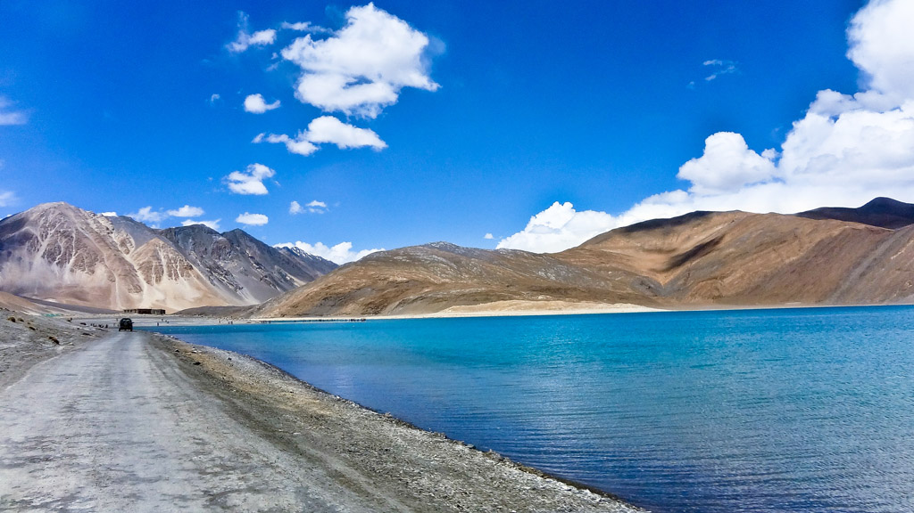

Leh: largest town and the capital of Ladakh, Leh is known for its historic monasteries, vibrant markets,
and the Leh Palace. It serves as a base for many travelers exploring the region
 Pangong Lake:-
This high-altitude lake is renowned for its clear blue waters and breathtaking scenery.
The lake extends from India to China, and its changing colors throughout the day make it a must-visit destination.
Pangong Lake:-
This high-altitude lake is renowned for its clear blue waters and breathtaking scenery.
The lake extends from India to China, and its changing colors throughout the day make it a must-visit destination.